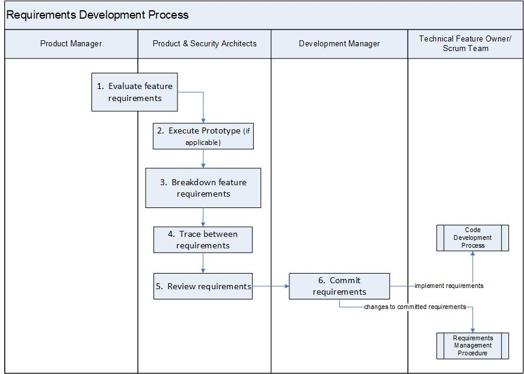

Requirements Development Procedure¶
The procedure describes the development of software requirements from customer requirements (i.e., Epics from Market Segments and Product Management). The Product Architect is responsible for this process.
Entry Criteria/Inputs |
|
Exit Criteria/Outputs |
|
Stakeholders¶
Role |
Responsibilities |
Product Architect |
Responsible for:
|
Development Manager |
Responsible for:
|
Scrum Team |
Scrum team includes Technical Feature Owner, Scrum Master, Development Engineer, Test Engineer, and Information Development Engineer. Responsible for:
|
Activities¶

Step # |
Activity Name |
Description |
|---|---|---|
1 |
Evaluate customer/product requirements (i.e., Epics from market segment and product management) |
The Product Manager ensures that the product requirements fulfill the Standard Criteria. The Product Architect evaluates customer requirements from market segment and product management. The evaluation is performed collaboratively with Product Manager to to ensure a mutual understanding of the customer/product requirements. This may result in further breakdown of Epics into sub-Epics to deal with larger scope items. |
2 |
Execute Prototype (if applicable) |
The Product Architect may require a prototype be developed to explore possible implementations of the customer requirements. |
3 |
Convert customer requirements to software requirements (i.e., development team stories and tasks) |
The Product Architect reviews and refines the customer requirements and also identifies the security related requirements. Security related requirements are marked as TBD <Check with Martin/Kitty/Roger> Customer requirements are converted into software requirements (including security related requirements) into the Requirements Management System as Stories including development, testing and documentation Stories. See Story Process. Note: The breakdown of requirements also occur iteratively throughout the development lifecycle of the Epic. This activity may also occur as part of a Scrum Team’s regular grooming activities. |
4 |
Trace between requirements |
The Product Architect or Scrum Team maintains a traceability between software and customer requirements. Software requirements are captured as Stories and/or stated broadly in the Epic’s description. The Product Architects are responsible to see that traceability between customer requirements and software requirements, and the hierarchy of requirements is maintained. |
5 |
Review requirements |
The Product Architect reviews and approves the set of requirements for implementation. See Tools and Template Instructions Section below. The software requirements(Epics)are reviewed/approved for implementation:
Any outputs deemed incomplete are sent back for refinement. |
6 |
Commit requirements |
After review of the requirements, the Development Manager agrees that the Epic is ready for development. The Development Manager identifies Scrum Teams that own the commitment and ensures an adequate staffing plan is available to deliver on the commitment. The commitment is made in collaboration with the identified Scrum Team and the Technical Feature Owner. See Tools and Template Instructions Section below. The set of requirements (Epics) is committed for the release it will be completed in. Any changes (e.g., scope, schedule) to the committed Epics will be managed according to Requirements Management Procedure The Scrum team further breaks down the Epics into Stories. The Technical Feature Owner/Scrum Team follows the Code Development Process. A snapshot of the requirements (from the Requirements Management System) is created at the start of the release as part of the Plan Of Record (POR) or Plan of Intent (POI) milestone and attached to the Release Documentation Repository (e.g., Jive) |
Tool & Template Instructions¶
Jira - Epic Record Template:
The following sections are required from PLM in order to be assessed by the Architect:
Epic Name
Epic Summary
Description
Acceptance Criteria
Definition of Done
PA Owner
The following sections are reviewed by the Architect in step #5:
Description
Acceptance Criteria
Definition of Done
Preliminary Estimate
PA Tracking
Requested Version
Dependencies
The following sections are reviewed by the Engineering Development Manager in step #6:
Scrum Team
Technical Feature Owner
Committed Version
{kind=link}
Change Log¶
Date |
Change Request ID |
Version |
Change By |
Description |
04/29/2020 |
N/A |
0.1 |
Shree Vidya Jayaraman |
Initial Draft |
05/28/2020 |
N/A |
0.2 |
Shree Vidya Jayaraman |
Incorporated feedback from Martin and Kitty |
06/11/2020 |
N/A |
0.3 |
Shree Vidya Jayaraman |
Incorporated feedback from Martin |
07/13/2020 |
N/A |
0.4 |
Shree Vidya Jayaraman |
Incorporated feedback from working session with Martin, Kitty, Guillaume and Numan |
07/24/2020 |
N/A |
0.5 |
Shree Vidya Jayaraman |
Incorporated feedback from Martin, Kitty and Guillaume |